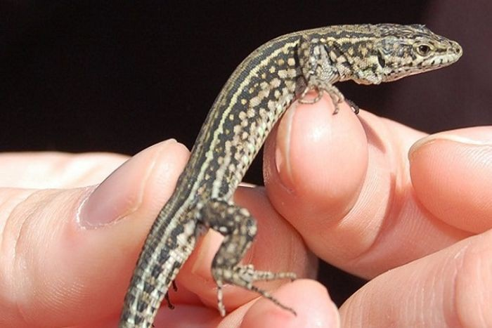

En la actualidad y cada vez con mayor frecuencia, nos encontramos con más propietarios que optan por adquirir un animal de compañía que no sea un perro o un gato. Aquí entran el amplio grupo de los llamados "animales exóticos", entre los que nos encontramos: Pequeños mamíferos: hurones, conejos, cobayas, hámsters, ratas, ardillas, petauros, erizos, chinchillas. Aves: periquitos, agapornis, ninfas, loros, amazonas, canarios, jilgueros, palomas... Reptiles: tortugas acuáticas y terrestres, lagartos, serpientes, camaleones, iguanas.
En Clínica Veterinaria BetoVet contamos con un equipo veterinario con amplia experiencia en el manejo y cuidados de este tipo de mascotas. Para ello ponemos a tu disposición una serie de servicios para garantizar la atención personalizada y adaptada a cada tipo de pacientes: *Consulta especializada: vacunas, desparasitación y microchip. *Asesoramiento en el manejo y alimentación. *Ecografía, Diagnóstico por imagen. *Laboratorio de análisis para trabajar con pequeños volúmenes de sangre. *Anestesia y cirugía. *Hospitalización. *Urgencias telefónicas 24 horas.